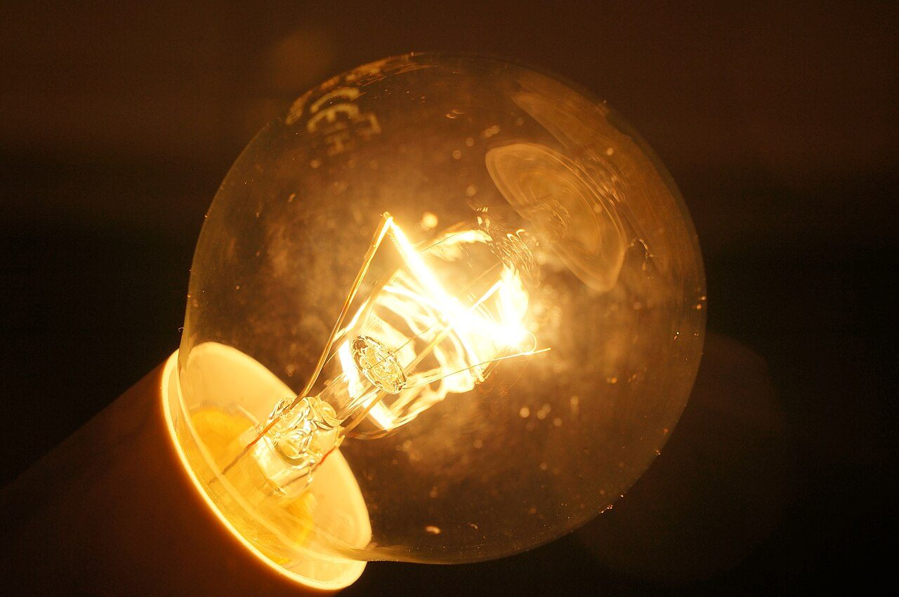
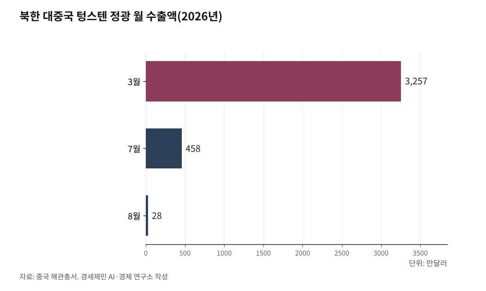

[환황해 철도망⑦] 제재 밖 북한 텅스텐, 3월 3257만달러에서 8월 28만달러로
상반기 대중 수출액은 1년 전의 일곱 배, 7·8월 1위는 다시 가발
유엔 금수 목록에 없는 텅스텐광, 화물 90%를 나르는 98% 단선 철도
영월 상동광산 9월 상업생산, 1단계 물량 90% 이상은 21년 장기계약에
반도체 배선과 전차 장갑을 뚫는 관통탄에 같은 금속, 텅스텐이 들어간다. 녹는점이 섭씨 3422도이고 밀도는 철의 2.5배인 전략 광물이다. 북한은 2026년 상반기 그 원료를 중국에 9135만달러어치 팔았다. 값이 꺾인 8월에는 한 달 28만달러에 그쳤다. 광석이 지나는 길과 한국의 자리를 짚는다.

1. 상반기 9135만달러, 7·8월 급감한 텅스텐 정광
중국 해관총서 자료로는 북한이 2026년 1~6월 중국에 판 텅스텐 정광은 1351톤이다. 금액은 9135만달러다. 1년 전 같은 기간 1267만달러의 일곱 배를 넘는다. 정광은 캐낸 광석에서 잡물을 걸러 성분을 높인 원료다.
월별 정점은 3월이었다. 349톤 3257만달러어치가 나갔다. 월 수출액 1000만달러를 넘은 달은 그전까지 2022년 8월뿐이었다. 2026년에는 3월과 4월이 잇따라 그 선을 넘었다. 1~4월에는 가발 같은 모발 제품을 제치고 대중 수출 1위에 올랐다.
물량 증가 폭은 자료마다 엇갈린다. 미국의소리(VOA)는 1~4월 물량이 1년 전의 13배를 넘었다고 전했다. 미국의 북한 분석 사이트 38노스는 1~5월 물량이 15%가량 늘었다고 분석했다. 38노스 집계로 1~5월 kg당 평균 값은 1년 전 8달러 안팎에서 70달러 가까이로 뛰었다.
값은 오래 가지 않았다. 7월 수출은 458만달러, 91.6톤으로 줄었다. kg당 값도 3월 약 93달러에서 7월 약 50달러로 내려왔다. 8월 수출은 28만달러에 그쳤다. 7월과 8월 대중 수출 1위는 다시 가발 제품(8월 2796만달러)이 차지했다.
북한은 텅스텐 값을 정하지 못한다. 중국 시장의 값이 오르자 수출액이 뛰었다. 값이 꺾이자 수출도 급감했다. 38노스는 1~5월 급증을 거의 순수한 가격 현상으로 봤다.

2. 철광석은 막고 텅스텐광은 비운 금수 목록
유엔 안보리는 2017년 8월 5일 결의 2371호로 북한산 석탄과 철·철광석, 납·납광석 수출을 막았다. 12월 22일 결의 2397호 6항은 마그네사이트를 포함한 흙과 돌을 더했다. 국제통일상품분류(HS)로 25류다. 같은 조항은 기계와 전기장비, 목재, 선박도 막았다.
안보리 1718위원회 목록에 오른 광물은 석탄, 철·철광석, 금, 티타늄광, 바나듐광, 구리, 니켈, 은, 아연, 희토류, 납·납광석, 마그네사이트다. 텅스텐은 없다. 텅스텐 정광은 광석·슬래그·회를 묶은 HS 26류에 든다. 같은 26류의 철광석과 티타늄광은 막혔으나 텅스텐광은 빠졌다.
막힌 광물도 몰래 나간다. 미국 유엔대표부는 2026년 7월 27일 성명을 냈다. 선박 7척이 2025년 12월~2026년 4월 결의 2371호를 어기고 북한산 석탄이나 철광석을 날랐다는 주장이다. 대표부는 이 배들의 국적 박탈과 입항 금지를 1718위원회에 요청했다.
데일리NK는 8월 28일 대북 소식통을 인용해 남포항 인근 해상의 석탄 환적을 전했다. 북한산 석탄 수천 톤이 배에서 배로 옮겨졌다. 하룻밤에 3000톤을 넘긴 날도 있었다고 소식통은 말했다. 금수 광물은 해상 환적이나 육로로 몰래 넘어가고 텅스텐은 세관을 거쳐 정식으로 국경을 넘는다.
3. 24만6000톤과 2만9000톤, 엇갈리는 매장량
북한 텅스텐 매장량은 기록이 크게 엇갈린다. 통일부 북한정보포털은 한국광물자원공사 자료를 들어 24만6000톤, 세계 4위로 적었다. 미국 지질조사국(USGS)은 2026년 자료에서 2만9000톤으로 잡았다. 두 값은 여덟 배 넘게 벌어진다.
북한은 매장량을 공식 발표하지 않는다. 정우진(2019)은 북한 당국이 밝히지 않는 한 매장량을 알 수 없다고 적었다. 한국광물자원공사는 북한 문헌과 국내외 보도를 모아 추정해 왔다. 통일부 표로는 남한 중석 매장량이 6만5900톤이다. 이 표대로면 북한은 남한의 네 배 가까이 된다.
생산은 늘었다. 통일부 표에서 북한 중석 생산량은 2017년 310톤에서 2018년 1410톤으로 뛰었다. USGS는 2024년 1900톤, 2025년 2000톤으로 추정한다. 매장량 추정은 엇갈려도 북한은 최근 한 해 2000톤 안팎을 캐는 생산국이다.
4. 광석이 철도에 오르는 자리
북한에서 짐을 나르는 것은 대부분 철도다. 통일부 자료로는 화물 수송의 90%를 철도가 맡는다. 전기기관차 한 대가 끄는 짐은 평균 1300톤이다. 철도 화물의 평균 수송거리는 약 160km로 자동차 화물의 15배다.
김성민·박형동 등 연구진 6명은 2020년 한국자원공학회지 논문에서 북한 광산 533곳을 지리정보 데이터베이스로 만들었다. 텅스텐을 포함한 13개 광종이다. 경로 분석은 국내 수요가 큰 철·동·연아연 등 7개 광종 132곳만 다뤘다. 텅스텐 광산은 이 분석에서 빠졌다.
분석 결과 광석은 광산에서 도로를 타고 나와 철도에 오른 뒤 항만으로 갈 수 있는 것으로 나왔다. 서부 광산은 송림항으로 이어졌다. 동부 광산은 단천항과 원산항과 청진항으로 나뉘었다. 연구진은 북한 광업이 크려면 철도 시설을 개보수하고 현대화해야 한다고 적었다.
그 철도는 낡았다. 국가데이터처 자료로 2024년 북한 철도 총연장은 5329km다. 통일부 자료로는 98%가 단선이고 70% 이상이 일제강점기에 놓였다. 광석이 오를 길은 있으나 좁고 오래됐다. 북한 광물을 공급망으로 다루려면 철길부터 따져야 하는 까닭이다.
5. 30여 년 만에 정광 낸 영월 상동광산
한국도 텅스텐을 캐던 나라다. 1916년 문을 연 강원도 영월 상동광산은 1950~60년대 한국 수출의 60% 가까이를 텅스텐으로 채웠다. 1990년대 초 문을 닫았다. 서울경제TV는 1994년 폐광으로 적었다. 알몬티는 1993년 가공공장이 멈췄다고 밝혔다.
광산은 2015년 알몬티 인더스트리즈가 사들였다. 캐나다에서 출발한 회사로 지금은 미국 몬태나주에 본사를 둔 나스닥 상장사다. 광업권은 이 회사가 100% 소유한 국내 자회사 알몬티대한중석이 쥐고 있다. 알몬티는 2026년 6월부터 공장에 광석을 넣어 시운전했다.
알몬티는 9월 17일 광산시설 검사증명서를 받아 상업운전을 할 수 있게 됐다. 9월 하순 첫 정광이 나왔다. 물량은 이미 묶였다. 알몬티는 7월 오스트리아 플란제 그룹 계열 GTP와 맺은 장기공급계약을 고쳤다. 첫 인도부터 21년 동안 1단계 생산량의 90% 이상을 공급하는 내용이다.
한국은 텅스텐 원료를 수입해 쓴다. KOTRA 자료로 2022년 한국이 들여온 산화텅스텐의 82.9%, 탄화텅스텐의 90.9%가 중국산이었다. 같은 해 중국이 수입한 텅스텐 정광 5901톤 가운데 2955톤은 북한산이었다. 중국은 북한 광석을 사는 쪽이자 한국에 원료를 파는 쪽이다.
USGS 추정으로 중국은 2025년 세계 텅스텐의 79%인 6만7000톤을 캤다. 상무부는 그해 2월 텅스텐 등 5개 품목에 수출허가제를 걸었다. 10월에는 2026~27년 국영무역 수출자격 규칙을 냈다. 2026년 1월 6일에는 텅스텐 제품이 든 이중용도 품목의 일본 군사용 수출을 막았다.
북한 텅스텐은 값을 따라 올랐다가 8월 28만달러로 꺼졌다. 상동 정광의 90% 이상은 GTP와 맺은 장기계약에 묶였다. 알몬티는 2027년 1월부터 미국 국방 조달이 광석 원산지까지 따진다고 밝혔다. 한국의 반도체 공장과 방산 업체가 쓸 텅스텐을 어느 길로 들여올지가 남은 숙제다.
※ 이 기사는 AI 프로그램 클로드를 활용해 작성했습니다.
참고문헌
공식 발표자료와 공공기록
· United Nations Security Council, "Security Council Committee established pursuant to resolution 1718 (2006)", Sanction measures, https://main.un.org/securitycouncil/en/sanctions/1718
· United Nations, "Security Council Toughens Sanctions Against Democratic People's Republic of Korea, Unanimously Adopting Resolution 2371 (2017)", SC/12945, 2017.8.5., https://press.un.org/en/2017/sc12945.doc.htm
· United Nations, "Security Council Tightens Sanctions on Democratic People's Republic of Korea, Unanimously Adopting Resolution 2397 (2017)", SC/13141, 2017.12.22., https://press.un.org/en/2017/sc13141.doc.htm
· United States Mission to the United Nations, "Statement by the United States Mission to the United Nations on U.S. Nomination of Seven Vessels for Designation by the UN 1718 Committee for DPRK Sanctions Evasion", 2026.7.27., https://usun.usmission.gov/statement-on-u-s-nomination-of-seven-vessels-for-designation-by-the-un-1718-committee-for-dprk-sanctions-evasion/
· 통일부 북한정보포털, "주요광물생산 및 수출입동향", 2023.7. 작성, https://nkinfo.unikorea.go.kr/nkp/pge/view.do?menuId=MENU_69
· 통일부 북한정보포털, "철도", 2023.7. 작성, https://nkinfo.unikorea.go.kr/nkp/pge/view.do?menuId=MENU_39
· 국가데이터처 기획조정관 국제협력담당관, "2025 북한의 주요통계지표", 2025.12.23., https://eiec.kdi.re.kr/policy/materialView.do?num=275165
· 산업통상자원부 산업정책실 산업공급망정책관 산업공급망정책과, "텅스텐 등 중국 수출통제품목 밀착 관리", 2025.2.5., https://eiec.kdi.re.kr/policy/materialView.do?num=262969
· U.S. Geological Survey(Souleymane H. Saloum), "Tungsten", Mineral Commodity Summaries 2026, 2026.2., https://pubs.usgs.gov/periodicals/mcs2026/mcs2026-tungsten.pdf
· Almonty Industries Inc., "Almonty's Sangdong Processing Plant Receives Final Operational Certification — Phase I is Now Commercially Operational", SEC Form 6-K Exhibit 99.1, 2026.9.21., https://www.sec.gov/Archives/edgar/data/0001670061/000149315226043476/ex99-1.htm
· Almonty Industries Inc., "Almonty Issues Shareholder Letter and Provides Corporate Update", SEC Form 6-K Exhibit 99.1, 2026.9.29., https://www.sec.gov/Archives/edgar/data/0001670061/000149315226044777/ex99-1.htm
연구보고서와 논문
· 김성민·서장원·오명찬·양아란·송재준·박형동, "북한 광물자원 교류를 위한 GIS 기반의 북한 교통 인프라 네트워크 분석", 한국자원공학회지, 제57권 제2호(2020), 159-167쪽, https://doi.org/10.32390/ksmer.2020.57.2.159
· 정우진, "북한의 광물자원산업 실태와 남북협력 방안", 한국자원공학회지, 제56권 제2호(2019), 204-211쪽, https://doi.org/10.32390/ksmer.2019.56.2.204
· KOTRA 베이징무역관, "중국 텅스텐 시장동향", KOTRA 해외시장뉴스, 2023.6.26., https://dream.kotra.or.kr/kotranews/cms/news/actionKotraBoardDetail.do?SITE_NO=3&MENU_ID=180&CONTENTS_NO=1&bbsGbn=243&bbsSn=243&pNttSn=203572
· Jinwook Nam, "North Korea's Economy, H1 2026: A Sliding Won and a Tungsten Windfall", 38 North(North Korea Briefing), 2026.7.15., https://www.38north.org/2026/07/north-koreas-economy-h1-2026-a-sliding-won-and-a-tungsten-windfall/
· Mark Winter, "Tungsten: thermochemistry and thermodynamics", WebElements(University of Sheffield), 2026.10. 열람, https://www.webelements.com/tungsten/thermochemistry.html
언론 보도
· VOA 뉴스, "북한, '텅스텐광' 중국 수출 13배 늘려…가발 제치고 1위", 미국의소리(VOA) 한국어, 2026.6.11., https://www.voakorea.com/a/north-korea-tungsten-exports-061026/8159445.html
· 함지하, "북한 '가발 수출' 다시 증가…7월 텅스텐 제치고 '중국 수출 1위'", 미국의소리(VOA) 한국어, 2026.8.24., https://www.voakorea.com/a/north-korean-wig-exports-082426/8189786.html
· 함지하, "북한 가발 수출 다시 급증…중국산 맥주 수입도 크게 늘어", 미국의소리(VOA) 한국어, 2026.9.23., https://www.voakorea.com/a/north-korea-s-wig-exports-092226/8202956.html
· 장슬기, "북중관계 개선 기류 속 北 석탄·광물 中 반입 규모 증가…제재 무색", 데일리NK, 2026.8.28., https://www.dailynk.com/20260828-5/
· 최동수, "[기획] '최대 46조 가치'...영월 상동광산 텅스텐 전량 해외로 가는 까닭은", 서울경제TV, 2026.3.28., https://www.sentv.co.kr/article/view/sentv202603260138
· Global Times, "China issues new rules on rare metal export management for 2026-27", Global Times, 2025.10.30., https://www.globaltimes.cn/page/202510/1346978.shtml
· Shalina Cao, "Tungsten market participants raise concern as China tightens export controls on Japan for dual-use items", Fastmarkets, 2026.1.9., https://www.fastmarkets.com/insights/tungsten-market-participants-concern-china-tightens-export-controls-japan/
사진 출처
· [대표사진] Pixelmaniac pictures (Leave a reply), "Tungsten filament in an incandescent light.JPG", 위키미디어 공용, CC0, https://commons.wikimedia.org/wiki/File:Tungsten_filament_in_an_incandescent_light.JPG
※ 이 기사는 인공지능을 활용해 작성했습니다.
관련기사
- [환황해 철도망⑧] 열차페리 1~3년, 해저터널 10년 뒤... 첫 단추는 인천신항 인입선
- [환황해 철도망⑥] 선령 30년에 걸린 한중 카페리, 새 배는 대부분 중국 조선소에서
- [환황해 철도망⑤] 북한 교역액의 98.2%는 중국, 국경을 넘는 철길 문은 넷
- [환황해 철도망④] 인천항 연안 컨테이너 3년째 0TEU, 끊긴 국내 컨테이너 뱃길
저작권자 © AI경세제민 무단전재 및 재배포, AI학습 및 활용 금지